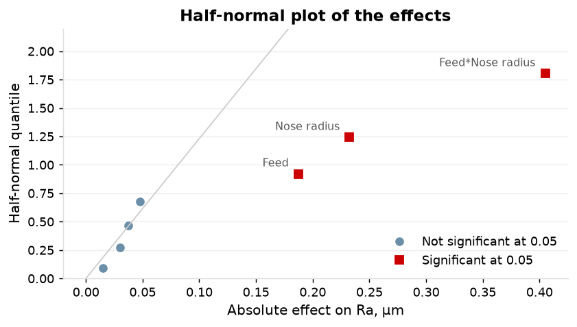
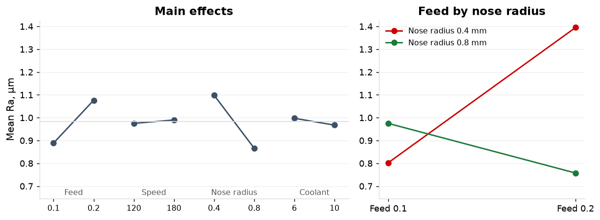
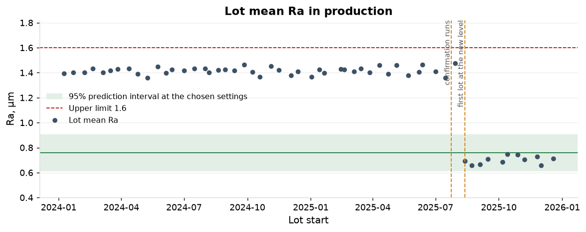

S5. Designed experiment on surface finish
1. The design
Sixteen runs on MT-02 on 15 July 2025 and the day after: a half fraction of four factors at two levels (D = ABC), two replicates, run order randomized. The design is resolution IV: feed by nose radius is aliased with speed by coolant.
| Factor | Low | High |
|---|---|---|
| A Feed, mm/rev | 0.1 | 0.2 |
| B Surface speed, m/min | 120 | 180 |
| C Insert nose radius, mm | 0.4 | 0.8 |
| D Coolant concentration, % | 6 | 10 |
2. Effects
Feed and nose radius interact: effect -0.405 µm (p < 0.001), 1.7 times the largest main effect, nose radius at -0.232. Feed is +0.187. Speed (+0.015, p = 0.61), coolant (-0.030, p = 0.32) and the other two interaction pairs are not significant.
| Term | Effect | Coef | SE Coef | T-Value | P-Value | Aliased with |
|---|---|---|---|---|---|---|
| Constant | +0.9825 | 0.0140 | 70.02 | 0.000 | ||
| Feed | +0.1875 | +0.0937 | 0.0140 | 6.68 | 0.000 | BCD |
| Speed | +0.0150 | +0.0075 | 0.0140 | 0.53 | 0.608 | ACD |
| Nose radius | -0.2325 | -0.1162 | 0.0140 | -8.29 | 0.000 | ABD |
| Coolant | -0.0300 | -0.0150 | 0.0140 | -1.07 | 0.316 | ABC |
| Feed*Speed | +0.0475 | +0.0238 | 0.0140 | 1.69 | 0.129 | CD |
| Feed*Nose radius | -0.4050 | -0.2025 | 0.0140 | -14.43 | 0.000 | BD |
| Feed*Coolant | -0.0375 | -0.0188 | 0.0140 | -1.34 | 0.218 | BC |

3. The reduced model
Feed, nose radius and their interaction explain 94.8% of the variation in Ra (R-sq adjusted), with S = 0.061 µm and no lack of fit (p = 0.28). The feed effect is +0.59 µm at the 0.4 mm radius and -0.22 µm at 0.8 mm: it reverses.
| Source | DF | SS | MS | F | P |
|---|---|---|---|---|---|
| Regression (Feed, Nose radius, Feed*Nose radius) | 3 | 1.01295 | 0.33765 | 91.36 | 0.000 |
| Residual error | 12 | 0.04435 | 0.00370 | ||
| Lack of fit | 4 | 0.01915 | 0.00479 | 1.52 | 0.284 |
| Pure error | 8 | 0.02520 | 0.00315 | ||
| Total | 15 | 1.05730 |

4. Residuals
Normality (p = 0.61) and run order (p = 0.15) are clean; the spread of the residuals rises with the fitted value (p = 0.022); the two days differ by 0.044 µm in mean residual and the design did not block on day. The prediction interval below is the constant-variance interval of the model.

5. The prediction and the confirmation
At feed 0.2 mm/rev with the 0.8 mm nose radius the model predicts Ra 0.76 µm (0.61 to 0.91) against 1.40 µm at the settings before. The four confirmation runs of 24 July 2025 gave 0.73, 0.74, 0.73, 0.68: 4 of 4 inside the interval, mean 0.72.
| Settings | Predicted Ra | 95% prediction interval | 95% confidence interval of the mean |
|---|---|---|---|
| Before: feed 0.20 mm/rev; speed 120 m/min; nose radius 0.4 mm; coolant 6% | 1.395 | 1.247 to 1.543 | 1.329 to 1.461 |
| Chosen: feed 0.2 mm/rev; speed 120 m/min; nose radius 0.8 mm; coolant 6% | 0.758 | 0.609 to 0.906 | 0.691 to 0.824 |
6. The alias check
The interaction is feed by nose radius, not speed by coolant. The confirmation runs lie in the half fraction, where the two take the same sign and cannot be told apart. The settings before the change lie outside it: the model gives 1.395 µm there if the interaction is feed by nose radius and 0.990 if it is speed by coolant. 44 production lots at those settings ran at 1.415.
| Value | |
|---|---|
| Speed main effect | +0.0150, p = 0.61 |
| Coolant main effect | -0.0300, p = 0.32 |
| Chosen settings: in the half fraction | yes; the two interactions take the same sign |
| Settings before: in the half fraction | no; the two interactions take opposite signs |
| Ra at the settings before if the interaction is feed by nose radius | 1.395 |
| Ra at the settings before if the interaction is speed by coolant | 0.990 |
| Production Ra at the settings before, 44 lots | 1.415 |
7. Production after the change
The 11 lots run since 12 August 2025 average 0.700 µm against the predicted 0.758: every lot below it, all 11 inside the prediction interval and 10 of 11 within 0.1 µm; the confirmation runs averaged 0.720. Against the upper limit of 1.6 µm the index was 0.96 on the 44 lots before (2,006 ppm expected above the limit, 9 readings recorded above it) and is 5.65 on the 11 lots since.
| Period | Lots | Readings | Mean Ra | sd | Fitted distribution | Median | 99.865th percentile | Index | Expected ppm above the limit | Readings above the limit |
|---|---|---|---|---|---|---|---|---|---|---|
| Before the change | 44 | 5,595 | 1.415 | 0.064 | folded normal | 1.415 | 1.608 | 0.96 | 2,006 | 9 |
| After the change | 11 | 1,380 | 0.701 | 0.053 | folded normal | 0.701 | 0.861 | 5.65 | 0 | 0 |

Recommendation
- Run C-16180-28 at feed 0.20 mm/rev with the 0.8 mm nose radius, speed and coolant at the current settings.
- Write the settings into the routing and the setup sheet so that the lot record carries them.
- Hold the roughness tester's calibration and the sampling plan on the part as they are.
- Use the Ra mean of each lot against the prediction interval on the SPC chart as the control.
Method and data
Design: two-level half fraction of four factors, D = ABC, two replicates, 16 runs, resolution IV; main effects are aliased with three-factor interactions and each two-factor interaction with one other. Model: least squares on coded levels; the reduced model keeps the terms significant at 0.05 with the main effects of a kept interaction; S = 0.061 on 12 degrees of freedom. Prediction interval: 95%, for a single run at the settings, constant variance. Confirmation: four further runs at the chosen settings. Production: lot means of the five-reading subgroups on C-16180-28. The lot record carries no cutting settings; the change is dated at the first lot at the new level, 12 August 2025, and 1 lot started after the confirmation runs at the old level (29 July 2025, 1.47 µm). Capability: percentile method on the distribution fitted to the readings, index from the median and the 99.865th percentile against the upper limit, as in S2.
Appendix
| Std order | Run order | Date | Feed | Speed | Nose radius | Coolant | Ra | Fit | Residual |
|---|---|---|---|---|---|---|---|---|---|
| 1 | 8 | 2025-07-15 | 0.1 | 120 | 0.4 | 6 | 0.83 | 0.8025 | +0.0275 |
| 2 | 15 | 2025-07-16 | 0.2 | 120 | 0.4 | 10 | 1.28 | 1.3950 | -0.1150 |
| 3 | 11 | 2025-07-16 | 0.1 | 180 | 0.4 | 10 | 0.77 | 0.8025 | -0.0325 |
| 4 | 10 | 2025-07-16 | 0.2 | 180 | 0.4 | 6 | 1.42 | 1.3950 | +0.0250 |
| 5 | 12 | 2025-07-16 | 0.1 | 120 | 0.8 | 10 | 0.94 | 0.9750 | -0.0350 |
| 6 | 1 | 2025-07-15 | 0.2 | 120 | 0.8 | 6 | 0.76 | 0.7575 | +0.0025 |
| 7 | 2 | 2025-07-15 | 0.1 | 180 | 0.8 | 6 | 1.02 | 0.9750 | +0.0450 |
| 8 | 14 | 2025-07-16 | 0.2 | 180 | 0.8 | 10 | 0.78 | 0.7575 | +0.0225 |
| 9 | 5 | 2025-07-15 | 0.1 | 120 | 0.4 | 6 | 0.80 | 0.8025 | -0.0025 |
| 10 | 16 | 2025-07-16 | 0.2 | 120 | 0.4 | 10 | 1.38 | 1.3950 | -0.0150 |
| 11 | 6 | 2025-07-15 | 0.1 | 180 | 0.4 | 10 | 0.81 | 0.8025 | +0.0075 |
| 12 | 4 | 2025-07-15 | 0.2 | 180 | 0.4 | 6 | 1.50 | 1.3950 | +0.1050 |
| 13 | 7 | 2025-07-15 | 0.1 | 120 | 0.8 | 10 | 1.05 | 0.9750 | +0.0750 |
| 14 | 9 | 2025-07-16 | 0.2 | 120 | 0.8 | 6 | 0.76 | 0.7575 | +0.0025 |
| 15 | 3 | 2025-07-15 | 0.1 | 180 | 0.8 | 6 | 0.89 | 0.9750 | -0.0850 |
| 16 | 13 | 2025-07-16 | 0.2 | 180 | 0.8 | 10 | 0.73 | 0.7575 | -0.0275 |
| Term | Effect | Coef | SE Coef | T-Value | P-Value | Aliased with |
|---|---|---|---|---|---|---|
| Constant | +0.9825 | 0.0152 | 64.65 | 0.000 | ||
| Feed | +0.1875 | +0.0937 | 0.0152 | 6.17 | 0.000 | BCD |
| Nose radius | -0.2325 | -0.1163 | 0.0152 | -7.65 | 0.000 | ABD |
| Feed*Nose radius | -0.4050 | -0.2025 | 0.0152 | -13.32 | 0.000 | BD |
| Lot | Start | Subgroups | Mean Ra | Difference from the prediction | Within 0.1 |
|---|---|---|---|---|---|
| L25-0751 | 2025-08-12 | 19 | 0.693 | -0.065 | yes |
| L25-0786 | 2025-08-22 | 21 | 0.657 | -0.101 | no |
| L25-0830 | 2025-09-03 | 28 | 0.664 | -0.094 | yes |
| L25-0874 | 2025-09-15 | 22 | 0.710 | -0.048 | yes |
| L25-0956 | 2025-10-06 | 26 | 0.685 | -0.072 | yes |
| L25-0980 | 2025-10-13 | 26 | 0.747 | -0.011 | yes |
| L25-1054 | 2025-10-28 | 28 | 0.742 | -0.016 | yes |
| L25-1103 | 2025-11-07 | 26 | 0.706 | -0.051 | yes |
| L25-1166 | 2025-11-25 | 28 | 0.730 | -0.028 | yes |
| L25-1174 | 2025-12-01 | 26 | 0.658 | -0.099 | yes |
| L25-1192 | 2025-12-18 | 26 | 0.713 | -0.045 | yes |
| Check | Result |
|---|---|
| Normality, Anderson-Darling | A-sq 0.276, p = 0.609 |
| Residual on run order, slope | -0.0043 per run, p = 0.146; Durbin-Watson 2.46 |
| Mean residual by day | 2025-07-15: +0.0219; 2025-07-16: -0.0219 |
| Absolute residual on fitted value, slope | +0.0794, p = 0.022 |
| Largest standardized residual | 2.18 |